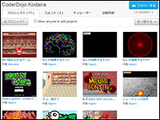

はじめに
CoderDojo Kodaira（コーダー道場こだいら）は、東京都小平市で活動している少年少女のためのプログラミングクラブです。参加費は無料で、小平市および周辺地域在住の有志のボランティアが運営しています。
近隣の道場のご案内


次回のセッションは8月19日(水) 18:30～ (要事前予約・詳細はこちら)
日時・場所
- 隔週水曜日 18:30～20:00
- 小平市民活動支援センターあすぴあ 会議室
小平市小川東町4-2-1 小平元気村おがわ東２階（地図）
ニンジャ（一般参加者）
参加要件
- 対象年齢
- 概ね7〜17歳
- 参加費
- 無料
- 各自持参するもの
- ノートPC（Windows/Mac/Linux）（貸出しも可（OS:Ubuntu15.04）・要事前連絡）
- 求めるスキル
- 試行錯誤する行為を楽しめること。こつこつとモノづくりを行うことが好きなこと。
小平Dojoでできること
初心者向けでお馴染みのScratch(スクラッチ)やHTML/CSS/JavaScriptなど。詳細は御相談に応じます。←参考: 小平DojoのメンターとニンジャによるScratchのプロジェクト集
メンター（子供の指導者）
ボランティアのメンター（子供の指導者・指南役・相談相手）を募集しています。年齢や職業は不問です。
問合せは下記連絡までお気軽にどうぞ。こちらのサイトからも募集を行っています。
「メンタリングのイメージがどうにも沸かない」という方は、過去のイベント情報やこちらの資料(PDF)をご覧下さい。
保護者の方にも可能な限り運営への御協力をお願いしております。詳しくはこちらの資料(PDF)もご覧下さい。
問合せは下記連絡までお気軽にどうぞ。こちらのサイトからも募集を行っています。
こんな人に来て欲しい！
- 子供の学習補助に関心がある人
- コードを学ぶことに抵抗がない人（初心者可！）
- コードだけではなく、画面設計（UX、UIデザイン、キャラクターデザイン等）にも興味がある・得意は尚可
注意
- 交通費や謝礼などの支払いは一切ありません…(;_;
- 小平周辺に在住・在学・在勤の方、大歓迎です！
保護者の方にも可能な限り運営への御協力をお願いしております。詳しくはこちらの資料(PDF)もご覧下さい。
寄付および賛助のお願い
CoderDojoの参加は無料ですが、運営に要する費用は活動趣旨にご賛同いただいた方からの会費や寄付金で賄われます。皆様からの温かいご支援をお待ちしております。
ゆうちょ銀行 記号10010 番号62832401
（他金融機関からの場合は 店名 〇〇八（ゼロゼロハチ） / 預金種目: 普通預金 / 口座番号: 6283240 ）
御家庭等で不要になったノートPCを提供して頂けないでしょうか。
希望は2009年以降発売・総重量1kg前後・LANとWLAN内蔵・USB有・モニタ13インチ程度。OSは不要です。
（徒歩または自転車で持ち運びしているので、あまり大きくて重いPCを運ぶことができません）
その他、備品の寄付も随時募集しています。Amazonの欲しいものリストも御覧下さい。
現在のところ活動報告程度の御礼くらいしかできそうにありませんが、どうか御協力のほど、何卒宜しくお願い申し上げます。
寄付
おいくらでも結構です。ゆうちょ銀行 記号10010 番号62832401
（他金融機関からの場合は 店名 〇〇八（ゼロゼロハチ） / 預金種目: 普通預金 / 口座番号: 6283240 ）
ノートPCの提供
子供達がDojoで使用するためのPCを2～5台程度増やせたらと考えています。御家庭等で不要になったノートPCを提供して頂けないでしょうか。
希望は2009年以降発売・総重量1kg前後・LANとWLAN内蔵・USB有・モニタ13インチ程度。OSは不要です。
（徒歩または自転車で持ち運びしているので、あまり大きくて重いPCを運ぶことができません）
その他、備品の寄付も随時募集しています。Amazonの欲しいものリストも御覧下さい。
現在のところ活動報告程度の御礼くらいしかできそうにありませんが、どうか御協力のほど、何卒宜しくお願い申し上げます。
連絡先
- FacebookPage (CoderDojo Kodaira)*具体的な御相談はメッセージ機能を御利用下さい
- Twitter (@CoderDojoKodaJp)*具体的な御相談はDM機能を御利用下さい
- coderdojokodairagmail.com